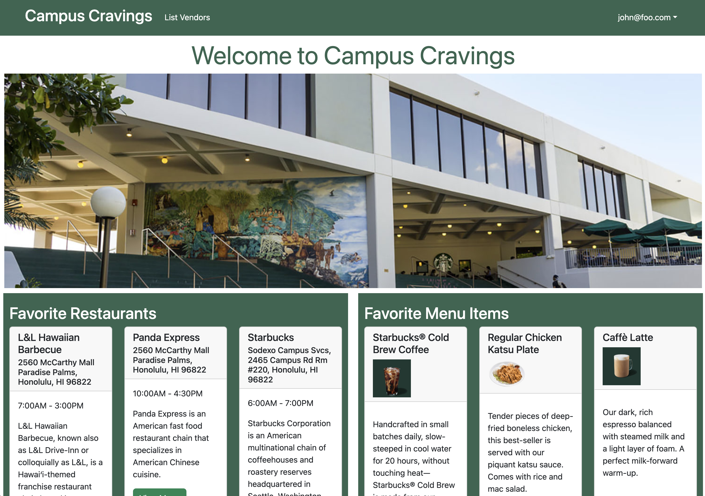
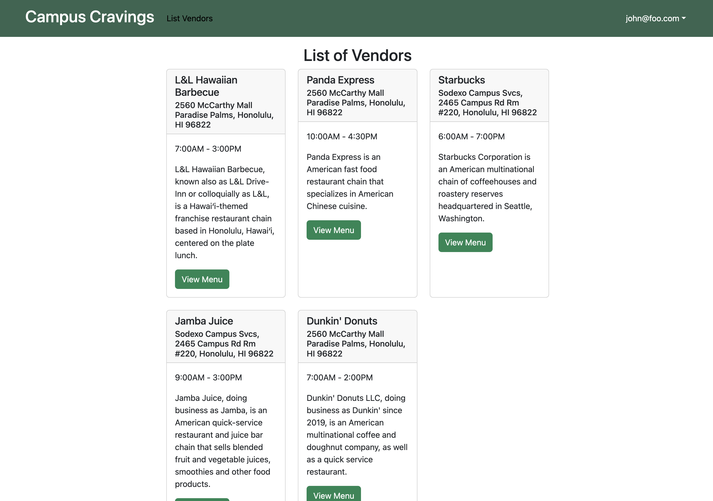
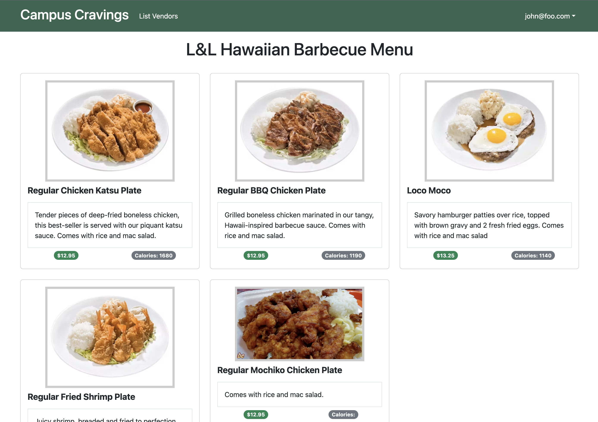
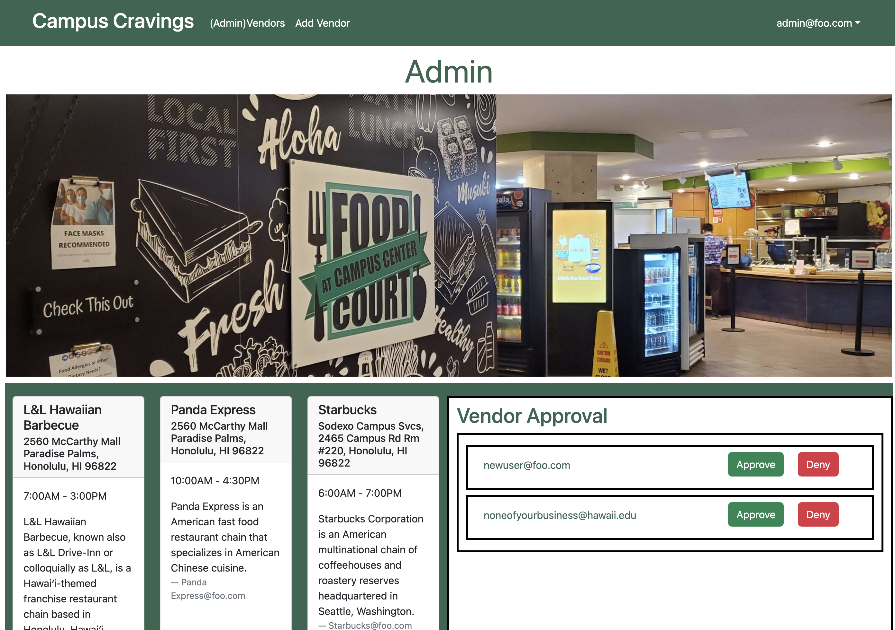

Campus Cravings
Overview
Campus Cravings is a database of restaurants on and near the campus of UH Manoa which will include the names, location, menus, prices, hours of operation, and payment methods of each. This database will significantly benefit UH Manoa students by providing a convenient and easily accessible resource for all things related to on-campus dining. Including accounts for eatery owners will help maintain up-to-date and accurate restaurant information, enhancing the overall dining experience on campus.
Project Links
Website Functionality
A user can either create an account or login to an existing one. 
They will be able to view existing restaurants on campus and the corresponding menu items.  
A vendor can create an account and request for the vendor role. This allows them to add and edit their restaurant’s menu items.

Admin accounts are able to approve vendor requests and add new vendors. This allows the website to stay up to date, even when the restaurants on campus change. 
My Role in the Development of Campus Cravings
- Deployment and management of the deployed site on Digital Ocean. This included using Robo3T and MontiAPM, as well as reserving a domain name and HTTPS
- User, Vendor, and Admin home page design and functionality
- Creating the NavBar and making sure the links are only accessible depending on the user’s role
- Created the overall visual design structure of the website
- Implemented a VendorProtectedRoute which allowed only users with the ‘vendor’ role to access certain pages and functions of the website
- Developed a vendor approval function where a new user could select ‘Request for vendor role’, and an admin would be able to approve it from a list on their home page
Experience for the Future
Campus Cravings was a project that required a mastery of using HTML/CSS to create the design and structure of the website, as well as JavaScript to implement the functionality of the features. Through this project, I learned how the components, pages, and API were linked together. I had to develop a strong understanding of the difference between server side and client side files, and was able to utilize this in order to update variables on the server depending on the requests from the client. Essentially, this project pushed everything I’ve learned from this class to the limit, and I had to actually learn a few things that we did not have time to cover from the modules.
This was also my first real group project for software development. The use of the GitHub Organization was pivotal to keep our group on task for each milestone of the project. We utilized project boards and issues in order to delegate tasks between our group members. I did feel like we were able to make a lot of progress on the theorycrafting part of the project when we met up in person for class, so I believe that future projects should have more of those in person meetings in the beginning of the project to figure out the overall direction.